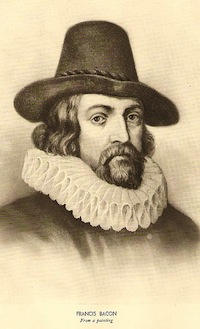

Of Beauty
Virtue is like a rich stone, best plain set; and surely virtue is best, in a body that is comely, though not of delicate features; and that hath rather dignity of presence, then beauty of aspect.
Neither is it almost seen, that very beautiful persons are otherwise of great virtue; as if nature were rather busy, not to err, than in labor to produce excellency.
And therefore they prove accomplished, but not of great spirit; and study rather behavior, than virtue.
Francis Bacon (1561-1626)